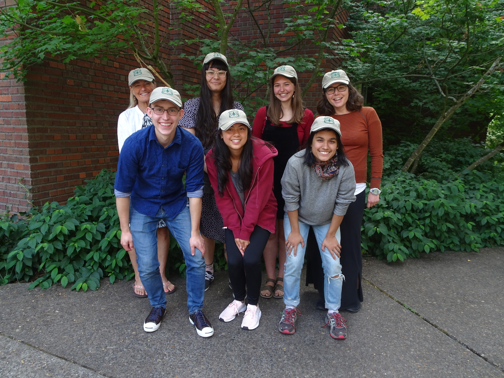

People
People
[Something about UFDS People]
Student Research Groups
Bucknell Summer 2025

Student Researchers
Calvin Bailey - Student Researcher: Data Analytics (Class 2025), Denison University
- Additional work Fall 2025
Austin Carroll - Student Researcher: Statistics (Class 2026), Bucknell University
Celine Chang - Student Researcher: Applied Mathematics (Class 2027), Bucknell University
- Additional work Fall 2025
Odilon Ligan - Student Researcher: Computer Science & Engineering (Class 2027), Bucknell University
Will Lindquist - Student Researcher: Statistics (Class 2027), Bucknell University
Jean Marie Ngabonziza - Student Researcher: Computer Science & Engineering (Class 2026), Bucknell University
Fayrene Nguyen - Student Researcher: Business Analytics (Class 2027), Bucknell University
FIA Collaborators: George Gaines, Tracey Frescino, Andy Lister, and Alex Young
Project Mentors:
Grayson White and Kelly McConville
Rebecca Beneroff - Research Mentor: Biology BA (Class 2025), Biology MA (Class 2027), Bucknell University
- Additional work Fall 2025
Harvard Summer 2023
Student Researchers
Dinan Elsyad - Student Researcher: Statistics (Class 2025), Harvard University
Lal Kablan - Student Researcher: Psychology, Economics (Class 2025), Harvard University
Niels Korsgaard - Student Researcher: Statistics (Class 2025), Harvard University
Thor Reimann - Student Researcher: Religion, Environmental Science, and Public Policy (Class 2025), Harvard University
FIA Collaborators: George Gaines, Tracey Frescino, Brett Butler, Jesse Caputo, Sara Goeking
Project Mentors: Grayson White, Kelly McConville, Kate Hu

Harvard Summer 2022

Student Researchers
Joshua Yamamoto - Student Researcher and Mentor: Mathematics (Class 2023), Harvard University
Julian Schmitt - Student Researcher: Applied Mathematics (Class 2023), Harvard University
Jing Shang - Student Researcher: Economics (Class 2023), Harvard University
Asteria Chilambo - Student Researcher: Mathematics (Class 2023), Harvard University
Maxwell VanLandschoot - Student Researcher: Economics (Class 2022), Reed College
FIA Collaborators: George Gaines, Tracey Frescino, Sara Goeking, Chris Woodall, Lara Murray, Ray Czaplewsk, Gretchen Moisen
Project Mentors:
- Kelly McConville, Grayson White, Kate Hu, Holly Munro, Steve Prisley
Reed Summer 2021
Olek Wojcik - Student Researcher: Mathematics, Economics (Class 2021), Reed College
- Also Participated Summer 2020
Sam Olson - Student Researcher: Mathematics, Economics (Class 2017), Reed College
Grayson White - Student Researcher: Mathematics, Concentration in Statistics (Class 2021), Reed College
FIA Collaborators: Tracey Frescino, Gretchen Moisen
Project Mentors: Kelly McConville
Reed Summer 2020
Olek Wojcik
Maddie Basil - Student Researcher: English (Class 2021), Swarthmore College
- Also Participated Summer 2019
Alex Flowers - Student Researcher: Mathematics with Emphasis in Statistics (Class 2021), Swarthmore College
- Also Participated Summer 2019
Isabelle Caldwell - Student Researcher: Economics (Class 2023), Reed College
Shulav Neupane - Student Researcher: Economics (Class 2020), Reed College
FIA Collaborators: Tracey Frescino, Gretchen Moisen, Chris Toney
Project Mentors: Kelly McConville
Reed Summer 2019
Maddie Basil
Alex Flowers
Sarah Maebius - Student Researcher: Mathematics, Concentration in Statistics (Class 2021), Reed College
Iris Griffith - Student Researcher: Mathematics, Concentration in Statistics (Class 2020), Reed College
Salma Huque - Student Researcher: Economics (Class 2020), Reed College
Miranda Rintoul - Student Researcher: Mathematics, Concentration in Statistics (Class 2019), Reed College
FIA Collaborators: Tracey Frescino, Gretchen Moisen, Chris Toney
Project Mentors: Kelly McConville

Swarthmore Spring 2018

Pravadh Singh - Student Researcher: Computer Science, Mathematics (Class 2018), Swarthmore College
Shirley Cheung - Student Researcher: Mathematics (Class 2018), Swarthmore College
- Also participated Fall 2017
Kevin Lai - Student Researcher: Economics, Mathematics (Class 2018), Swarthmore College
- Also participated Fall 2017
Lan Anh Ngo Quy - Student Researcher: Mathematics, Computer Science (Class 2019), Swarthmore College
- Also participated Fall 2017
FIA Collaborators: Tracey Frescino, Gretchen Moisen
Project Mentors: Kelly McConville
Swarthmore Fall 2017
Shirley Cheung
Kevin Lai
Lan Anh Ngo Quy
Leon Chen - Student Researcher: Computer Science, Mathematics with Emphasis in Statistics (Class 2018), Swarthmore College
Sida (Mick) Li - Student Researcher: Mathematics, Philosophy (Class 2018), Swarthmore College
Jacob Gichan - Student Researcher: Mathematics, Classical Studies (Class 2018), Swarthmore College
FIA Collaborators: Tracey Frescino, Gretchen Moisen
Project Mentors: Kelly McConville
Swarthmore Spring 2016
Becky Tang - Student Researcher: Computer Science, Mathematics, Computer Science (Class 2018), Swarthmore College
George Zhu - Student Researcher: Mathematics, Philosophy (Class 2017), Swarthmore College
FIA Collaborators: Tracey Frescino, Gretchen Moisen
Project Mentors: Kelly McConville *
Whitman Fall 2013 & Spring 2014
Cooper Schumacher - Student Researcher: Mathematics (Class 2014), Whitman College
FIA Collaborators: Tracey Frescino, Gretchen Moisen
Project Mentors: Kelly McConville
FIA Collaborators
George Gaimes - Research Mathematical Statistician, FIA
- Summer 2022 - Summer 2025
Tracey Frescino
- Fall 2013 - 2025
Andy Lister - Research Forester, FIA
- Summer 2025
Brett Butler - Research Forester, FIA
- Summer 2023
Jesse Caputo - Research Forester, FIA
- Summer 2023
Sara Goeking - FIA National Program Manager, FIA
- Summer 2022 and 2023
Chris Woodall - Director U.S. Forest Science and Policy, ctree
- Summer 2022
Lara Murray - Principal Owner, Seris Forest Analytics
- Summer 2022
Ray Czaplewski - Retired FIA Scientist
- Summer 2022
Gretchen Moisen - Retired FIA Research Forester, Skier, Foiling Surfer
- Fall 2013 - 2022
Chris Toney - Biological Scientist, FIA
- Summer 2019 - 2020
Mentors
Grayson White - Research Forester, FIA - Co-Director - 2021 - Present Kate Hu - Assistant Professor of Statistics, Ohio State University
- Summer 2022 and 2023
Holly Munro - Senior Research Scientist, NCASI
- Summer 2022
Steve Prisley - Consultant, Formerly Principal Research Scientist, NCASI
- Summer 2022